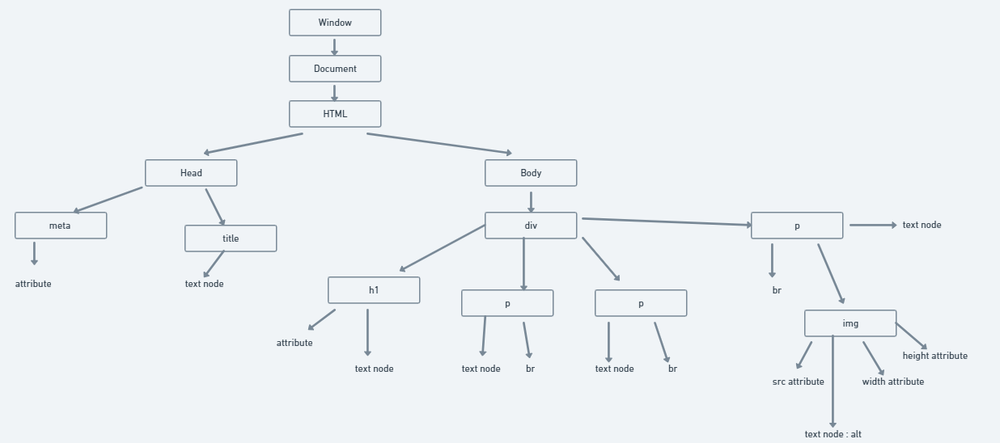

DOM stands for Document Object Model At the end of the day whatever we use, react / angular. They are all made of some object. Similar to this html file. This is also a document. What are objects in this file ? head, body, paragrapgh all of these are objects
To understand better Step1: Open any wikipedia page. I will recommend to search about "Brendan Eich". One of the founder of JS. Step2: Inspect on the page and try console.log(window) you can notice further functions within it. But we need to focus on the document property We will see further details about the document like - jquery, location, baseURI etc. Step3: console.log(document) or console.log(windows.document) Here we won't see all those additional things popping out. We will simply get the head & body Conclusion: Incase we need to access everything about the document & perform complex task We can simply check console.dir(doument) For getting full details about the document
Why pracricing the diagram of document is necessary ? To understand the relationship(parent-child class) between objects / figure out siblings Here, below diagram represents the DOM representation of this particular page. ZOOM IN for better Look 
Step1: Open any wikipedia page. I will recommend to search about "Brendan Eich". One of the founder of JS. Step2: Inspect on the page and try "document.getElementById('firstHeading')" You will get the desired element & it's further details ( you can select any another element too) Step3: document.getElementById('firstHeading').innerHTML ="